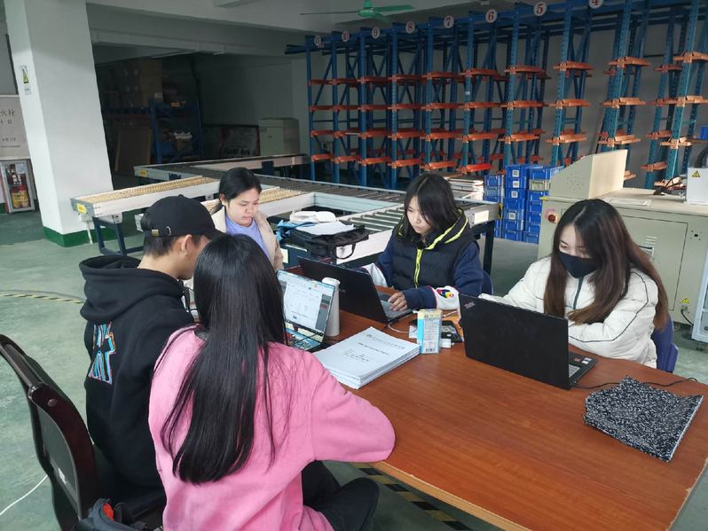
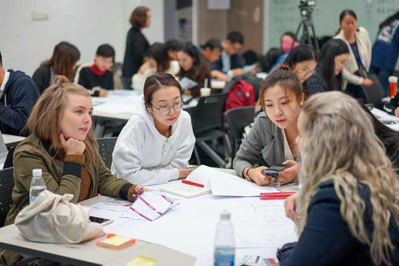
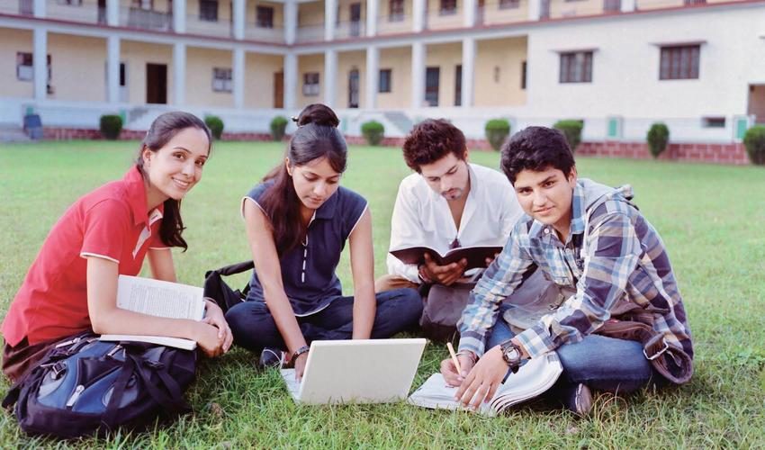
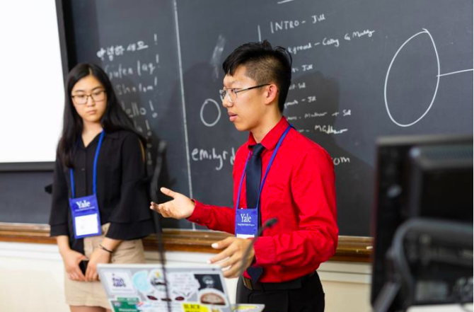

Student Project Showcase
Digital Marketing Strategy in Practice
This project was completed by RTO Business Management students with the goal of designing and implementing a comprehensive digital marketing strategy for a local small business. Through market research and competitive analysis, the team developed a comprehensive plan that included social media promotion, search engine optimization (SEO), and content marketing. During the implementation of the project, we successfully enhanced the brand awareness of the company and realized significant growth of the customer base. 
Intelligent Logistics Management System Development
A team of Information Technology students developed an Intelligent Logistics Management System for a logistics company. The system integrates RFID tracking, automated inventory management, predictive data analysis, and other functions, which greatly improves the efficiency of warehouse operations and reduces manual errors. During the implementation of the project, team members gained in-depth knowledge of key skills such as database design, IoT technology and data visualization.
Mobile Application Development: Health Management Assistant
This is an interdisciplinary collaborative project in which software development and health science students worked together to develop a health management mobile app. The application combines features such as exercise tracking, dietary advice, and mental health assessment to provide users with a full range of health management services. The project team rapidly iterated the product through Agile development methodology, and ultimately gained high praise from users.
Green Building Design and Assessment System
A group of architectural engineering and environmental science students collaborated to develop an intelligent system for evaluating the environmental performance of buildings. The system utilizes big data analysis to rate the energy efficiency, material sustainability, and water recycling system of a building, providing a scientific environmental indicator for building design. The project demonstrates how technological innovation can drive green development in the construction industry.
